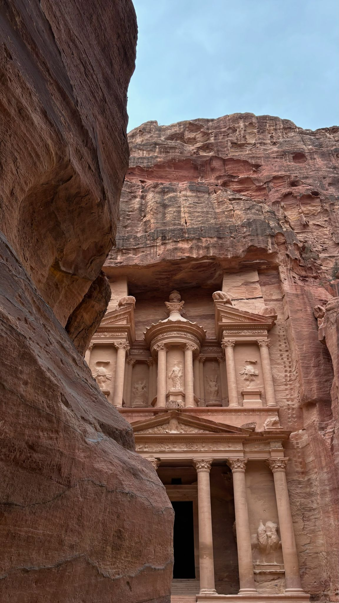
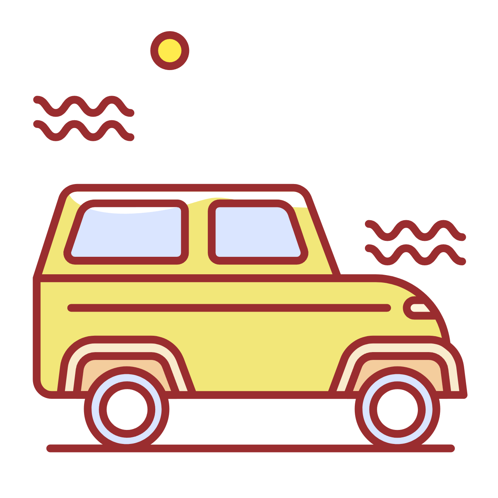
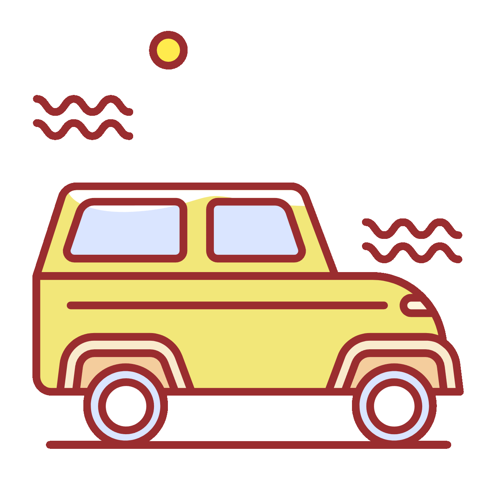

My Erasmus Journey in Maribor
The following text uses WOFF fonts loaded from Google Fonts.
WOFF (Poppins): Isabel Rodríguez Polín
WOFF (Playfair Display): Isabel Rodríguez Polín
The following fonts are loaded from local TTF files.
TTF (Roboto Mono): Isabel Rodríguez Polín
TTF (Archivo Black): Isabel Rodríguez Polín
My favorite trip so far has been Jordan. The following photo was taken in Petra, one of the most famous historical sites in the world.
The following photos were taken with an iPhone 16 with HDR enabled in the camera. HDR (High Dynamic Range) improves image quality by capturing more detail in bright and dark areas, resulting in more balanced and realistic photos.

Format: JPEG
File size: 411 KB
JPEG is one of the most common formats for photographs. It uses compression, which reduces file size while maintaining good visual quality. It is widely used on websites and digital cameras.
Format: PNG
File size: 2,926 KB
PNG provides higher image quality and supports transparency. However, it usually has a much larger file size, which makes it less efficient for web use when dealing with photographs.
Format: WebP
File size: 333 KB
WebP is a modern format designed for the web. It offers better compression than JPEG and PNG, resulting in smaller file sizes while maintaining high image quality. This makes it ideal for web pages.
In this comparison, PNG has the largest file size, JPEG has a medium size, and WebP is the smallest. This shows that WebP is the most efficient format for web use.
In this section, the same graphic is shown in three different formats: SVG, PNG and GIF. This makes it easier to compare file size and purpose.
Format: SVG (Scalable Vector Graphics)
File size: 7.5 KB
SVG is a vector format created using code. It can be scaled without losing quality, so it is ideal for logos, icons and web graphics.

Format: PNG
File size: 117 KB
PNG is a raster format. It usually provides good quality and is commonly used for graphics, but it has a larger file size than SVG because it stores the image as pixels.

Format: GIF
File size: 33.1 KB
GIF is an older format that supports simple graphics and animation. It is limited in color, but it can still be useful for lightweight web graphics.
In this comparison, the SVG version is the most efficient because it only occupies 7.5 KB and can be resized without losing quality. The PNG version is much larger at 117 KB because it stores the graphic as pixels. The GIF version, at 33.1 KB, is smaller than PNG, but it has more limited color support. This shows that SVG is usually the best option for simple web graphics.
This section includes a useful audio in Spanish about the Erasmus scholarship. It provides practical information related to Erasmus and complements the multimedia content of this website.
Format: MP3
MP3 is one of the most common audio formats used on websites because it offers good sound quality with a relatively small file size. This makes it practical and efficient for online multimedia content.